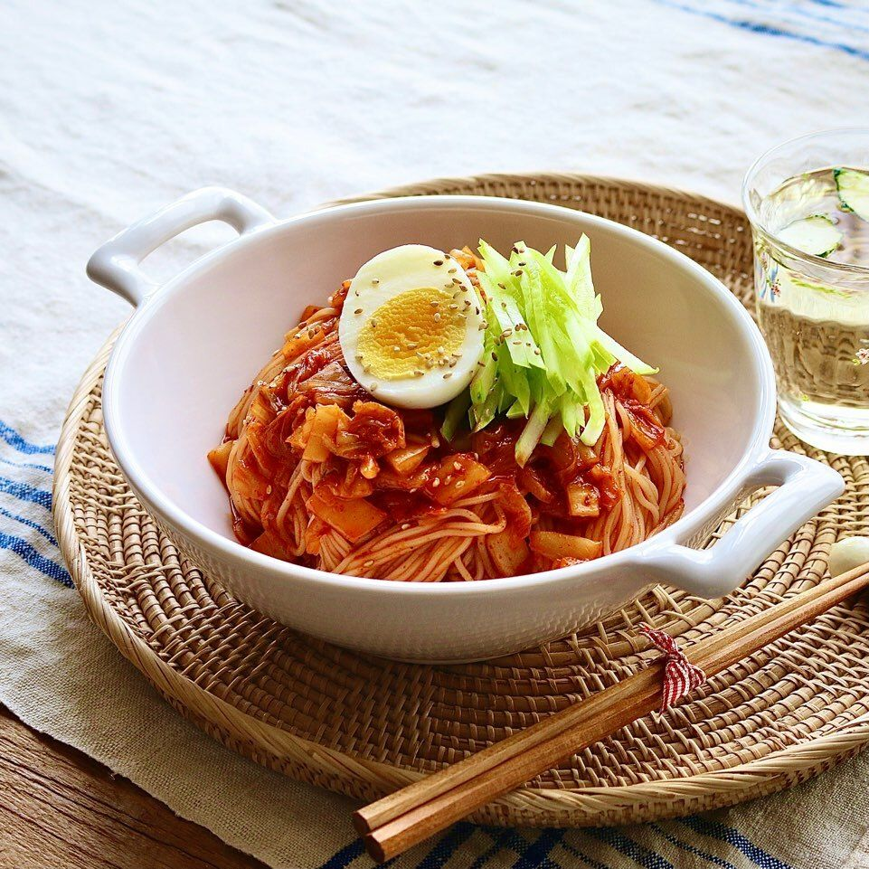

군침이 절로 도는
김치비빔국수
따뜻한 국물에 폭 담긴 잔치국수도 좋지만, 보기만해도 입맛 당기는 비빔국수도 매력있죠. 특별한 재료가 없어도 쫑쫑 썰어 올려진 신김치가 감칠맛을 더해요. 소담스럽게 담아 식탁에 올리면 김치비빔국수 하나만으로도 꽉찬 한끼가 된답니다.
재 료 |
- 신김치 2컵 | 중면 200g | 오이 1/2개 | 삶은달걀 1개 | 깨 약간
양 념 |
- 고추장 2큰술 | 식초 2큰술 | 올리고당 2큰술 | 간장 1큰술 | 설탕 1큰술 | 맛술 1큰술 | 참기름 1큰술 | 후추 약간
요리법 |
- 김치는 굵게 다져 양념재료와 섞어주세요. 오이는 채썰고, 삶은달걀은 이등분으로 잘라주세요.
- 끓는 물에 중면을 펼쳐 넣고, 면끼리 달라붙지 않도록 젓가락으로 저어주세요. 물이 끓어오르면 찬물 반 컵을 3~4회 반복해서 부어 국수를 삶아주세요.
- 흐르는 찬물에 중면을 여러 번 씻어 전분기를 없애고, 동그랗게 말아 채반에 밭쳐 물기를 빼주세요.
- 김치를 넣은 양념장에 삶은 면을 넣고 고루 버무려주세요.
- 접시에 비빔국수를 담고 삶은 달걀과 오이채, 깨를 올려주세요.